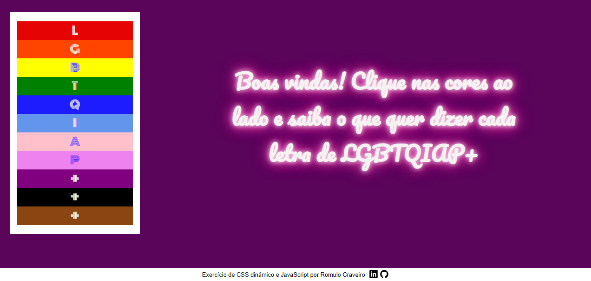
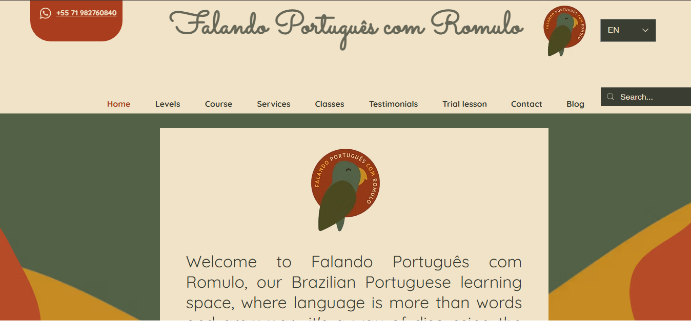
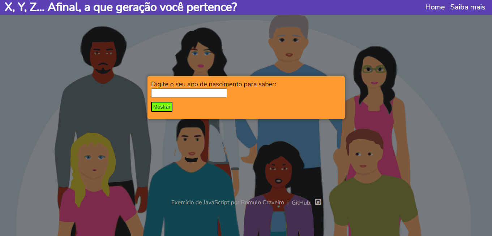
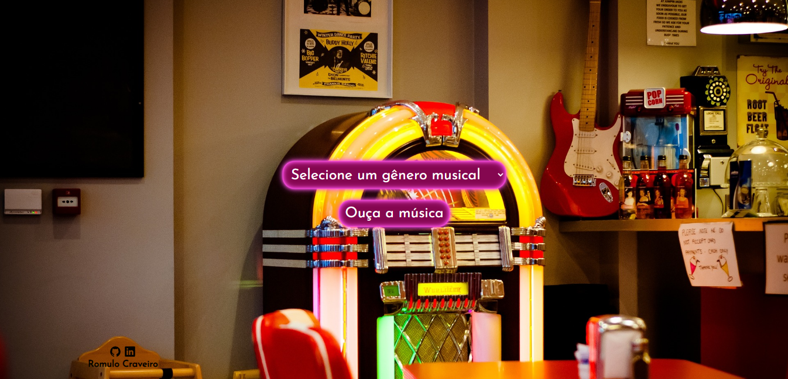
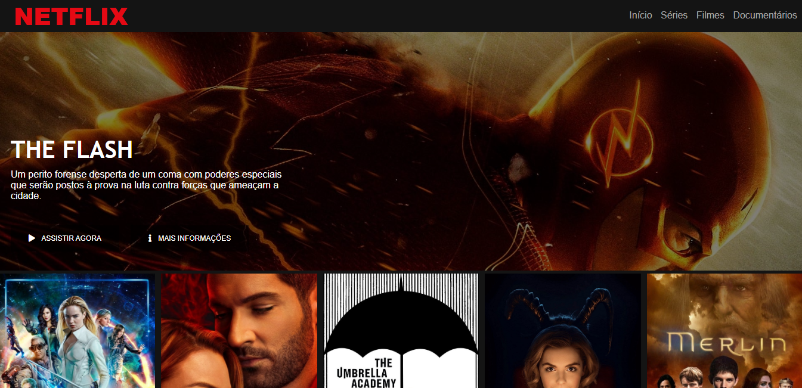
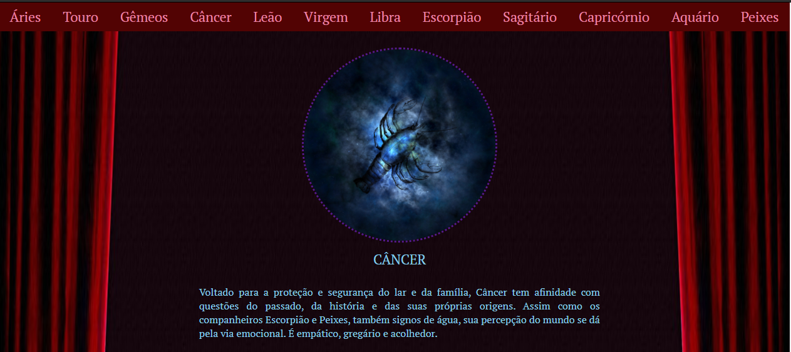
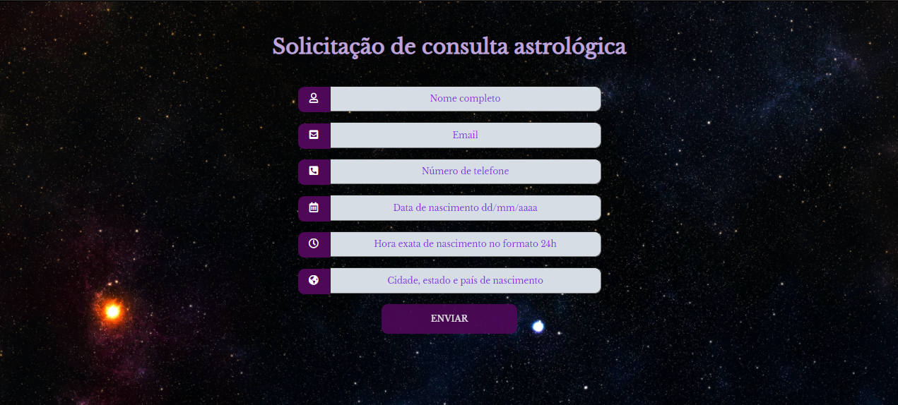
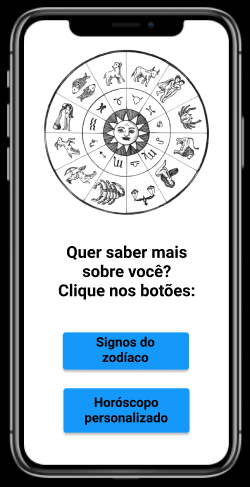

Contact information
Phone: + 55 (71) 99221 0760
E-mail: romulocraveiro@gmail.com
Main skills
- HTML
- CSS
- JavaScript
- Node JS
- SQL
- React JS
- Figma
- WAVE (Web Accessibility Evaluation)
Languages
- English: advanced
- Italian: intermediate
- Spanish: pre-Intermediate
My favorite projects
Click on the images to access the projects:








Romulo Craveiro de Sousa Tartaruga
Full-stack developer
Professional Objective
To work as a web developer
Summary
During almost four years in the hotel business, I learned how to align rules and procedures with the needs of customers through kind and attentive service, focused on their safety and well-being. Then, as a teacher, I helped students with their linguistic and human development, and colleagues and trainee teachers with their pedagogical development. Creating welcoming, inclusive and collaborative environments resulted in high satisfaction and positive evaluations. I feel prepared to apply this humanized vision as a flight attendant, contributing to memorable experiences for internal and external customers.
Education
SOFTWARE DEVELOPMENT COURSE
CUBOS ACADEMY | NOVEMBER 2021 - JUNE 2022- Back-end - programming logic, Node.js, and PostgreSQL;
- Front-end: HTML, CSS, JavaScript, React JS;
- Soft skills - time management, non-violent communication, agile methodologies Trello and Jira Atlassain, negotiating, advanced English, non-violent communicaiton
- Development of web applications, back-end and front-end integration, code versioning.
ALGORITHMS AND PROGRAMMING
INSTITUTO CONHECIMENTO LIBERTA | FEBRUARY 2021 - JUNE 2021MASTER OF LETTERS DEGREE
UNIVERSIDADE FEDERAL DA BAHIA | MARCH 2009 - NOVEMBER 2011.ENGLISH LANGUAGE SPECIALIZATION COURSE
UNIVERSIDADE SALVADOR | APRIL 2008 - DECEMBER 2009.TEACHING DEGREE IN LETTERS - PORTUGUESE AND ENGLISH
UNIVERSIDADE SALVADOR – UNIFACS | MARCH 2003 - DECEMBER 2007.SIT TESOL CERTIFICATE COURSE
WORLD LEARNING SIT GRADUATE INSTITUTE – COLIGAÇÃO DAS ENTIDADES DE EDUCAÇÃO E CULTURA BRASIL ESTADOS UNIDOS | JULY 2012.ASTROLOGY FORMATION COURSE
GAIA ESCOLA DE ASTROLOGIA | JANUARY 2015- NOVEMBER 2019.Experience
FREELANCE WEB DEVELOPER
COLÉGIO DE PSICANÁLISE DA BAHIA | JULY-AUGUST 2017 | SALVADOR-BA- Wix website development. Some features I added to the institution's website: 🔗
- A photo galery and embedded video; 🔗
- Google Maps in the "Contact" page; 🔗
- An embedded “issuu” e-reader to make it possible to read articles with page-turning and a sound effect; 🔗
- The training of personnel to empower them to update and maintain the website.
WIX SITE DEVELOPER
Falando Português com Romulo | NOVEMBER 2024- Website for my Portuguese course🔗
I used Figma to develop de design.
Other professional experiences
FREELANCE TRANSLATOR PT/EN/ES/IT
ASTRODIENST | SINCE JAN 2017 | REMOTETradução de artigos de astrologia.
OTHER CLIENTS | SINCE JAN 2000 | REMOTE/span> Meu portifólio 🔗PORTUGUESE FOR FOREIGNERS TEACHER PORTUGUESE LANGUAGE CENTRE | DE AGOSTO DE 2023 A OUTUBRO DE 2024 | SALVADOR-BA
The diversity allowed me to interact with different cultures and learning needs. In pedagogical meetings, we looked for strategies to engage students, help them with difficulties and increase their participation. Updating attendance sheets and reports facilitated communication between teachers and coordinators. Planning lessons, correcting assignments, providing materials and promoting a good classroom climate were essential contributions to the students' success, reflected in their performance, appreciation and desire to continue together in the following terms.
PROFESSOR DE INGLÊS
ACBEU | DE ABRIL DE 2009 A JANEIRO DE 2023 | SALVADOR-BAI had the joy of contributing to the training of new teachers by welcoming them into my classes, observing theirs and offering them guidance. As for the students, I always tried to make oral assessments more welcoming, creating a relaxed environment for them to express themselves naturally so that they could be evaluated with fairness. During the pandemic, I was honored to be part of a team that trained colleagues in using online tools and encouraging creativity. My classes were frequently observed by superiors, and the feedback and self-reflection sessions helped me to improve my teaching practices, always with the students' growth in mind.
BILINGUAL RECEPTIONIST AND RESERVATIONS DESK ASSISTANT
HOTEL TRANSAMÉRICA SALVADOR | APR 1997 TO JAN 2021 | SALVADOR-BAIn the reservations department, we negotiated sales with national and international operators and companies, meeting demands efficiently and in harmony with the hotel's various sectors. Looking for more direct contact with clients, I moved to reception. There, I was able to hone my customer service skills, learning the importance of helpfulness and effective communication to manage conflicts, explain access rules and manage a constantly moving environment. I worked varied shifts with diverse teams and carried out internal night audits, developing attention to detail and ensuring compliance with protocols to optimize check-out.